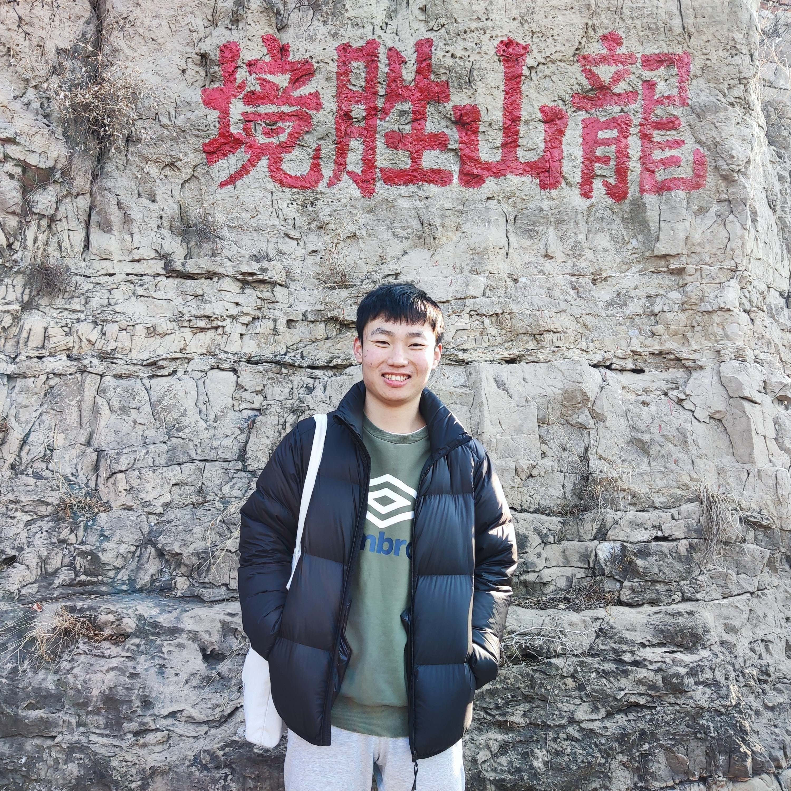

Zhongyang Ren
I am a first year graduate student at NAIL@HNU(Neuromorphic Automation and Intelligence Lab at Hunan University), where I work on Event-based Robotic Vision. Before that, I did my bachelors at School of Information Science and Technology, Shandong Normal University.
Email /
Bilibili /
Zhi Hu /
ResearchGate
News
12/2022, I joined Neuromorphic Automation and Intelligence Lab at Hunan University.
06/2022, I graduated from Shandong Normal University and received my Bachelor's degree of computer science and technology.
09/2021, I was admitted to School of Robotics, Hunan University.
Research
Event-based Image Processing
Undergraduate Thesis: Research on Hyperspectral and Multispectral Image Fusion Methods Based on Deep Internal and External Prior Learning
Recent Projects
Videoes
Services